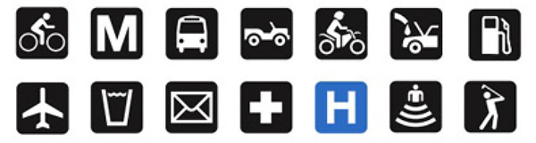
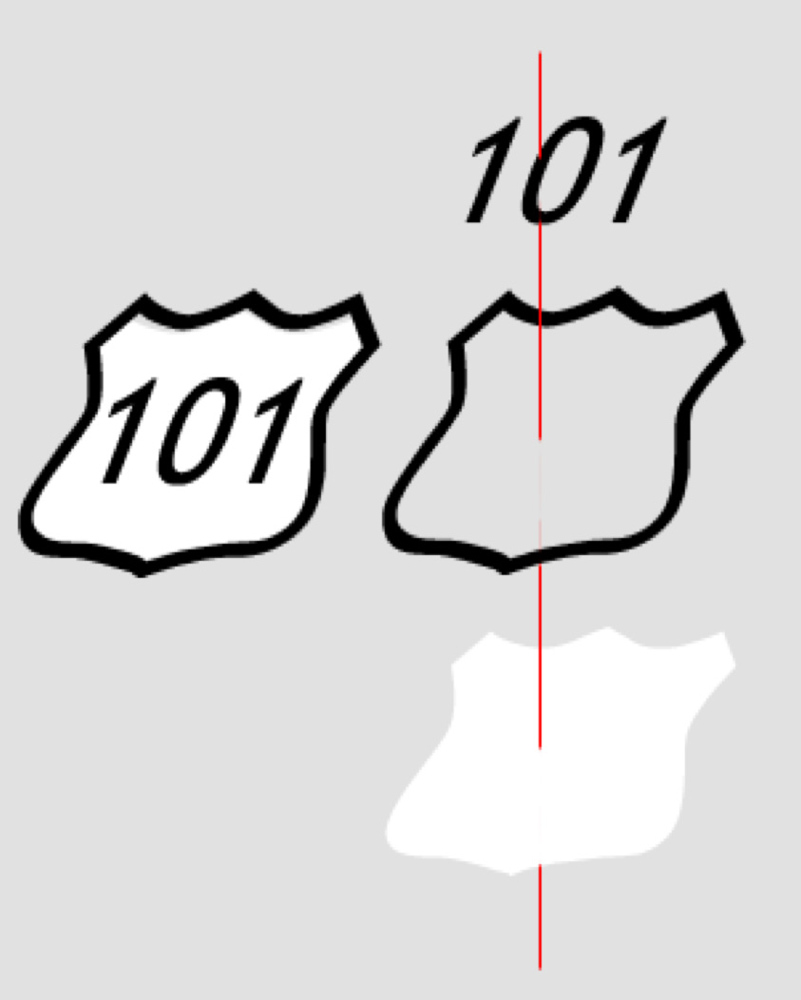
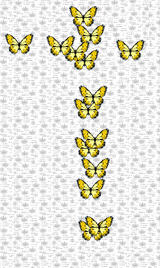

Geospatial Visualization
School of Architecture
Dr. Timothy Norris
tnorris@miami.edu
tnorris@miami.edu
Christopher Mader
cmader@med.miami.edu
cmader@med.miami.edu
Image: accusoft blog
Pop Quiz (not for grade)
Presentation of Initial Sketch
In Class Next Week
In Class Next Week
Presentation Style
- In person zoom meeting
- You will share your screen from the lab (either a lab machine or your machine)
- You will open your project in the GIS software of your choice
- You will have a maximum of 5 minutes to present
- Your presentation will be followed by a critique/review
Presentation of Initial Sketch
In Class Next Week
In Class Next Week
Expectations/Criteria
- outline and show project data management
- show two data layers (not counting base map)
- show a first draft of layout (title, legend, labels)
- introduce the outline of your story
- define an initial question you want to answer (ARC 594/694)
- share any problems you encountered
- include an aggregate data display (extra credit)
Please see the rubric for more detailed information.
Typography and Cartography
Perhaps the second hardest part of cartography (after finding data)
Sans Serif
Serif
Fonts for Cartography
Gill Sans
Optima
Caslon Pro
Myriad Pro
Meridian
Kepler
Popular Design Fonts
Helvetica
Trajan
Garamond
Futura
Bodini
Frutiger

Some Terminology
More than you wanted to know, but . . .
More than you wanted to know, but . . .
Character Spacing
Kerning
Leading
- Special spacing between characters
- Different for each font
- Space between words
Leading
- Space between lines
- Can be expressed as percent of font height or points
Most design software packages allow for adjustment to kerning between individual characters in a word. This can be important for large fonts; for example poster titles.

Map Text Conventions
- Think about visual hierarchy and your story
- ALWAYS
- Natural features (rivers, oceans, lakes, mountains) - SERIF
- Human features (cities, roads, states, counties) - SANS SERIF
- Generally
- Four fonts at most, better two or three
- Avoid bold text when possible
- Avoid type crashes (with lines, points or any other features)
Symbology and Cartography
- The Symbolization Problem
- Conventions
- Standardization
The Symbolization Problem
How to understand geographic phenomena,
symbolize them,
and then re-present them on a map?
symbolize them,
and then re-present them on a map?
- Select a measurement level (or find data for the level you are interested in)
nominal, ordinal, interval, or ratio (categories to numbers, respectively) - Choose the dimension for the symbol
point, line, or area - Repeat this process for all features that are desired on the map
Symbology and Cartography
- Mimetic Symbols
pictorial symbols or icons - Geometric Symbols
points, lines, or polygons - ... conventions, conventions, conventions ...
Iconography and Mimetic Symbols
- Large online libraries of symbols
mostly based on fonts - Make your own ...
- Multi-layered Symbols
- Bitmap Symbols


Stacked Symbols
- The Highway shield is a classic example of a stacked symbol
- The yellow and black outline that surrounds Peru is a single complex cartographic line symbol with 13 stacked layers


Geometric Symbols
- Primary visual variables: size, shape, orientation, and color (hue, saturation, and value)
- Secondary visual variables: texture, arrangement, pattern orientation, focus

Texture (picture) Symbols
- An image for point symbols
- An image as a fill symbol


Elevation, Shaded Relief and Hypsometric Tinting
Contours and a Basic Need to Show Elevation
A few exercises
not recipes, but use the keywords to find help in Google
- Geocoding
> give addresses lat/long coordinates - Joining tables
> attach attributes to spatial geometries - Creating a new layer
> for drawing your own geographies - Creating a Layout
> for printing or export - Shaded Relief
> just for fun
Geocoding - 1
- Need to attach lat/lon to a list of address information
- usually comma separated values (csv), similar to excel spreadsheet
- ArcGIS geocoding service
- Up-to-date geocoding engine
- Uses credits - see Understanding Credits
- "Free" online geocoding services
- Census.gov - somewhat accurate
- Texas A&M - needs free account
- geocod.io - first 1000/day free, then you pay
- More, ... google "online geocoders"
- in the GIS ...
- Import as csv with lat/long coordinates as columns
- Google "create x,y points from csv" in [GIS of choice]
Geocoding - 2
- Public LEED Project Directory
- Go to https://www.usgbc.org/projects
- Filter for only Miami, explore ...
- Note that there is address information - geospatial data!
- Download the version already made in Box Folder
- Go to https://geocod.io
- Upload the xlsx file
- Check the column selections for the geocoding process
- Note (but do not choose) the possible enrichments
- Create account and download geocoded data
- in the GIS ...
- Follow the create point methods from last week
- Either of ArcGIS Pro or QGIS
- Label the layer (right click layer and look for either properties or label)
Joining tables - 1
- Census data example: attributes and geography come separate
- Get Census data from the "US Census Bureau" (data.census.gov)
- start at https://data.census.gov/cedsci/
- Search and select table (poverty in Florida 2021 - 5 year ACS)
- "Customize Table" and add geography (Census tract - Florida - All Census Tracts in Miami-Dade County)
- look for "Download Table Data" and download (make sure S1701 is selected)
- Explore the map tab while your download is prepared
- When ready, return to table > click "Download"
- use IPUMS at https://uma.pop.umn.edu/ as an alternative
- Get geographic data from "Census Geography Program"
- start at https://www.census.gov/programs-surveys/geography.html
- Look for "Tiger/Line Shapefiles"
- Select correct year (2021)
- Use web interface
- Select 2021 as year and "Census Tracts"
- Select "Florida" -> download
Joining tables - 2
- problems with the Census webpages??
- in the GIS ...
- Import poverty data as csv with no geometries
> open attribute table and note header rows - Import tracts from shapefile
> open attribute table and inspect - The join will be based on "GEOID" (tracts) and "Geography" (csv)
> note that you must remove the "1400000US" from the Geography column in the csv
> find the "Field Calculator", create a new field GEOID in the csv as: right("Geography" ,11) - Right click the geometry layer, find "Joins" in the layer properties (ArcGIS)
Right click the layer, select properties, look for joins (QGIS)
> join the csv with the tracts using GEOID (tracts) and the new GEOID (csv) - Symbolize from layer properties
> note many different options, explore ...
- Import poverty data as csv with no geometries
Creating a data layer
- ArcGIS Pro
- Find an appropriate location to create a new file in Catalog
- Right click and choose type of layer to create
- Specify parameters (depends on layer type)
- From Edit panel edit layer and add a feature (draw) -> save
- From attribute table edit fields and add one, then enter a value -> save
- QGIS
- Find an appropriate location to create a new file in Browser
- Right click and choose type of layer to create
- Specify parameters (depends on layer type) -> add a field before saving
- Use pencil icon to edit layer and then add tool (point, polygon or line) -> right click to finish
- Enter values for fields and then save with pencil icon
Layouts for Printing and Export
- ArcGIS Pro
- "Insert" Panel > New Layout (choose size)
- Add "Map Frame" and adjust scale and size
- add other elements: title, legend, scalebar
- "Share" Panel > Layout > export
- QGIS
- Project > New Print Layout (create a name)
- right click on page to change "Page Properties"
- Add Item > Add Map (draw rectangle on page)
- add other elements: title, legend, scalebar
- Layout > Export
Shaded relief #1
Download the Hawaii 100m DEM and do the Data Management Dance
(unzip the data.zip into your project data folder - why??)
(unzip the data.zip into your project data folder - why??)
- ArcGIS Pro
- Add the geotiff of elevation data to the map
- Answer yes to the "build statistics?" question
- Right click the layer and choose symbology
- Leave as "stretch" and find the color scheme that looks similar to the Raven Map
- In the lower panel, find the "Mask" tab" and check the box "Display background value."
- From the top "view" panel, select the "Geoprocessing" toolbox and search for "Hillshade"
- Make the DEM layer the "Input raster" and give the "Output raster" a good name and location (e.g. hillshade.tiff)
- Leave the default Azimuth and Altitude and in the lower right click run.
Shaded relief #2
- ArcGIS Pro
- From the top Map panel choose the "Light Grey Canvas" from the base map button
- In the left layer list (TOC) turn off the layer "Light Grey Reference"
- In the TOC turn off the shaded relief layer (hillshade)
- From the top Insert panel choose New Layout
- From the top Insert tab (withthe layout active) create a new Map Frame
- Share (export) the map layout as a tiff with 300 dpi and a good name (e.g. hypsometric.tif)
- Turn off the hypsometric layer (colors) and turn on the shaded relief (hillshade)
- Share (export) the map layout with the shaded relief and a good name (e.g. shaded.tif)
- Open both files in photoshop and blend with "multiply"
NOTE: this was "quick and dirty." There are so many ways to approach shaded relief. If you are curious, ask google.
A few more exercises (perhaps useful for your sketch)
not recipes, but use the keywords to find help in Google
not recipes, but use the keywords to find help in Google
- Use API as service
> load online dynamic data into a GIS
> if you use this in your sketch ...
>> make sure to have two additional layers that you downloaded to your project directory. - Georeferencing
> locating external files (mostly rasters) in geographic space
Use API as Service - 1
- API - Application Programming Interface
- Sharing of dynamic data across some network protocol (i.e. the internet)
- Include "API" in your search terms (as an alternative to "shapefile")
- Among many other data providers, Arc GIS Online provides data as APIs
- Great for data exploration and online mapping applications
- Not suitable for publication ready maps (hard to cite)
- Find an API endpoint
- Identify metadata
- Copy the URL
- [ sometimes not obvious ]
Use API as Service - 2
- ArcGIS Pro
- Add data to map -> Data From Path
- Paste URL
- QGIS
- Add data to map - ArcGIS REST Server
- Edit the URL and delete everything after .../FeatureServer
- Paste URL
- Click "add to map"
Georeferencing ARC GIS Pro
- For both raster (tiff, jpg) and vector (dxf) data
- ArcGIS Pro Raster
- add layer to map
- click Raster layer: find "Image" panel > georeference
- fit to display, move, scale
- add control points
- ArcGIS Pro Vector
- add layer to map
- click CAD layer group > expand layer group > select one CAD layer
- click "CAD Layer" panel > georeference
- fit to display, move, scale
- add control points
Georeferencing QGIS
- For both raster (tiff, jpg) and vector (dxf) data
- QGIS Vector
- possible but a little complicated
- google "georeference dxf QGIS"
- QGIS Raster
- Plugins - GDAL georeferencer
- Raster > GDAL Georeferencer
- add image to georeferencer
- add control points (from map canvas)
- Settings > Transformation Settings > (Choose Transformation Type)
- "Play" button
- load image in QGIS